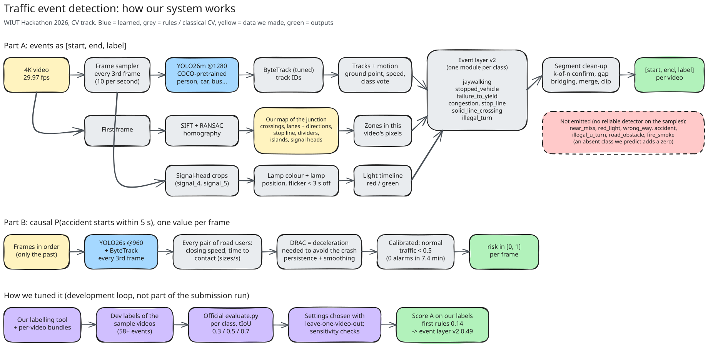

Team lead · CV pipeline
Davlatyor Abduloxunov
Scene map of the junction, labelling and review of the dev set, research direction, pipeline and design decisions, website.
MDB Vision · WIUT Hackathon 2026 · Computer Vision track
From one fixed 4K camera we detect and track every road user, align our map of the junction to each video, and turn trajectories into events: jaywalking, vehicles failing to yield, stopped vehicles, stop-line and lane violations, illegal turns, congestion. A causal risk score estimates how likely a crash is in the next 5 s.
Part A: for each video, return [start, end, label] for 14 event classes, scored by macro F1 over
temporal IoU 0.3 / 0.5 / 0.7 — boundaries matter. Part B: a causal per-frame probability that an accident starts
within 5 s. Runs offline on a T4 within 3× the video length.

docs/pipeline.excalidraw in the repository). Blue = learned, grey = rules / classical CV, yellow = data we made, green = outputs.We drew the scene once on a median background: crossings, pavements, islands, lanes with directions, stop line, solid lane dividers, approaches, signal heads. The camera framing shifts by up to ~125 px between recordings, so each video's first frame is matched to the reference with SIFT + RANSAC and the zones are moved by the homography.
| Class | How we detect it | Dev F1 (first rules → v2) |
|---|---|---|
| illegal_turn | Origin → destination + lane of origin: a left turn to the bottom-left road from any lane but the leftmost (all normal left turns came from lane 0). | 0.00 → 1.00 |
| stop_line | The vehicle arrives past the stop line while its signal is red and stops there; the event ends when the light turns green. | 0.67 → 0.86 |
| stopped_vehicle | Near-still vehicle boxes linked by overlap over time (not by tracker IDs, which switch); a signal queue stands and drives off together, a parked car does not. | 0.00 → 0.83 |
| jaywalking | "Someone is on the carriageway outside a crossing" for the whole scene, margin scaled by the person's height, riders excluded, confirmed over 1 s, gaps up to 3 s bridged, events end 1 s after the last road sample. | 0.32 → 0.52 |
| congestion | ≥ 4 still vehicles in the junction for ≥ 5 s, bridged over 10 s gaps. | 0.29 → 0.36 |
| failure_to_yield | Post-encroachment time: a moving vehicle's footprint covers a spot on the crossing that a walking pedestrian occupied within 2 s. | 0.10 → 0.26 |
| red_light | The vehicle's front crosses the stop line while its signal has been red for at least 4 s (past any amber, which glows orange-red at dusk) and stays red for 2 s more (not an early start); it drives on through the junction. | no labelled example · fires only on the one real runner in the 4 samples |
| wrong_way | On the straight carriageways only (not the junction), motion measured over 2 s runs against our lane arrows for at least 2 s and 3 vehicle lengths. | no labelled example · silent on the 4 samples, catches 20/20 real tracks played backwards |
| solid_line_crossing | The vehicle's footprint centre crosses (or straddles) the solid stretch of a lane divider. | 0.00 → 0.14 |
| not emitted | near_miss, accident, illegal_u_turn, road_obstacle, fire_smoke — no reliable detector on the samples; a predicted class that is absent from the test set would add a zero to the average. | — |
F1 = mean over tIoU 0.3/0.5/0.7 with the official evaluate.py, on our labels of three
sample videos; settings chosen on the same labels, so these are optimistic. Leave-one-video-out: jaywalking 0.44,
failure_to_yield 0.22.
| Video | Resolution | fps | Duration | Light | Tracks (car / person / bus / truck) |
|---|
Vehicles split into a standing mode (queues, parked cars) and a moving mode; people mostly walk at 0.3-1 heights/s. These ranges set our thresholds: "still" below 0.12-0.15, "walking" 0.2-1.5, faster people are riders.
Our annotated playback of every sample video (boxes by class, active events, timeline strip), the event timeline — click an event to jump the video to it — and the Part B risk curve. On the three videos we labelled, our labels are drawn as outlines under the predictions.
No accidents occur in the samples; the risk stays below the 0.5 alarm threshold throughout (maximum 0.25–0.44), which is the intended behaviour on normal traffic.
| start | end | label |
|---|


We labelled three sample videos ourselves (58+ events, 8 classes) with our own labelling tool and scored every change with the official metric. What moved the score:
| Class | Main error found | Fix | Effect |
|---|---|---|---|
| stopped_vehicle | "≥ 4 other still cars = queue" is almost always true somewhere; IDs switch over minutes | overlap-linked static groups; queue = stands and leaves together | 0.00 → 0.83 |
| failure_to_yield | 85 predictions for 7–11 real: pedestrians waiting at the kerb, riders, far half of the crossing | post-encroachment time on the car's footprint, walking pedestrians only | 0.10 → 0.26, 85 → 21 predictions |
| jaywalking | one long event split into many short ones (each half caps at tIoU 0.5) | scene-level signal, k-of-n confirmation, 4 s gap bridging | 0.23 → 0.47 |
| stop_line | car crossed on green, then held past the line by turning cars | must arrive past the line on red | 0.67 → 0.86 |
| red_light | amber (orange-red at dusk) read as red; early starters just before green | crossing counts only on a red settled for 4 s that stays red 2 s more | fires only on the one real runner |
| wrong_way | turns off the carriageway and weaving motorcycles counted as wrong way | only straight carriageways, 2 s window, sustained 2 s and 3 lengths | silent on the samples; 20/20 on reversed tracks |
Other checks: tiling the frame (SAHI-style) does not help jaywalking — the missed people were already detected at 1280 px; the metric is strict — even our labels shifted by only 2 s score 0.62; random segments score 0.12.
| Config | CPU fps | people / frame | cars / frame | agree vehicles | agree people | tracks | median track length | fragments |
|---|
YOLO26m at 1280 px keeps the far pedestrians (26 per frame vs 16 for the smaller models) and gives the longest, least fragmented tracks with ByteTrack; our submission uses it on the T4. BoT-SORT fragmented more. The demo uses YOLO26s / YOLO26n for CPU speed.
| Class | Variant | F1 |
|---|---|---|
| jaywalking | first rules (per person, no bridging) | 0.23 |
| scene-level signal, untuned settings | 0.09 | |
| + tuned confirmation, 4 s gap bridging, 3 s minimum (leave-one-video-out) | 0.44-0.46 | |
| + distance to any kerb, + partial-box filter (flipped between folds, kept off) | 0.43 | |
| failure_to_yield | first rules (pedestrian near the vehicle) | 0.10 |
| pedestrian within one lane of the vehicle's path | 0.08 | |
| post-encroachment time on the vehicle footprint | 0.10 | |
| + walking pedestrians only (leave-one-video-out 0.17) | 0.21 | |
| + rider speed cap, partial boxes, skip crosswalk_3 (leave-one-video-out 0.22) | 0.26 | |
| stopped_vehicle | first rules (track IDs + "4 or more still cars = queue") | 0.00 |
| overlap-linked groups + "drives off together" only | 0.74 | |
| + "neighbours stand with it" only | 0.57 | |
| both conditions (one-at-a-time sensitivity 0.67-0.86) | 0.83 | |
| solid_line_crossing | box corners as wheels | 0.11 |
| footprint centre + straddling | 0.14 | |
| detection | 4K tiles (SAHI-style) instead of 1280 px, on the missed jaywalking events | 12x slower, no gain |
What a traffic centre would see for this camera over the four sample recordings: events per class, how often they happen, and the busiest minutes.
Upload an .mp4 from this intersection camera, any size or resolution, up to 2 minutes (longer clips are cut to the first 2 minutes; we scale the video down ourselves, so large 4K files only take longer to upload). Our pipeline runs on the server's CPU — zones aligned to your clip, YOLO26 + ByteTrack, the event rules and the causal risk score — and returns the events, a clickable timeline, an annotated playback and the risk curve. For speed on CPU it uses a smaller detector (YOLO26s for clips up to ~50 s, YOLO26n for longer) and 5 frames per second. On this free 2-core server that takes about 4-5x the clip length (a 30 s clip: about 2 minutes); the progress bar shows each stage and the time left. Other cameras run too, but our zones are drawn for this intersection, so their events are not meaningful.
If the zones sit on the crossings, lanes and islands of your clip, the events are meaningful. If they do not, the clip is from another view and the events should be ignored.
| start | end | label |
|---|
A detector + tracker + aligned scene map + one transparent rule module per class, a labelling tool with per-video bundles for the team, dev labels for three sample videos, an evaluation harness per class, and a causal pair-risk estimator for Part B. The event layer runs in about 0.04× the video length.
Team lead · CV pipeline
Scene map of the junction, labelling and review of the dev set, research direction, pipeline and design decisions, website.
Member · Data labelling
Labelling of the sample videos (dev set).
Member · Data labelling
Labelling of the sample videos (dev set).
weights/download.sh